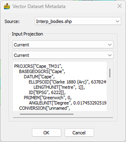
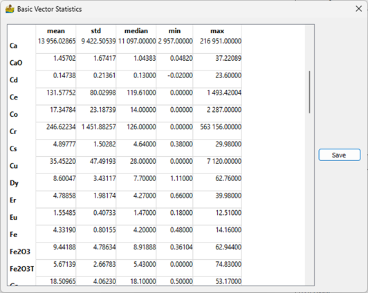
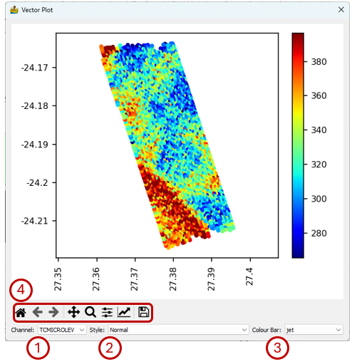
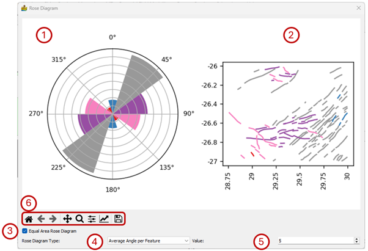
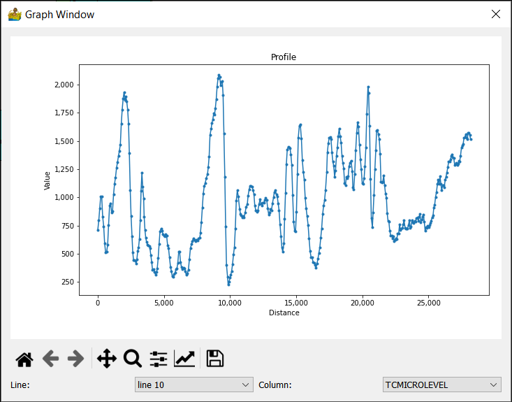
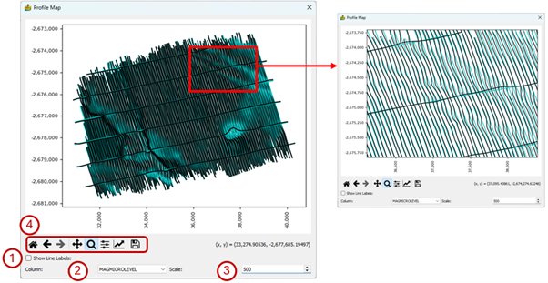

Vector Analysis: Context Menu¶
The vector context menus are available for vector data that have been imported and for modules which operate on vector data and have raster or vector output data. The menu content for the Vector Import Module depends on the type of data (polygon, polyline, point) that was imported. Similarly, for functions performed on vector data, the context menu will depend on the type of data produced by the function. If the output data is still in vector format the context menu will depend on the type of vector data. In the case of a raster output the context menu will contain most of the items pertaining to raster dat, and additional items applicable to the input vector data. To access the context menu, simply right-click on a module.
Display/Edit Vector Metadata¶
Here, the map projection associated with the vector file can be either defined or changed. The projection is chosen through drop boxes, with the first drop box containing the datum, and the projection in the second drop box. The datum determines which projections are available.

Basic Vector Statistics¶
Vector datasets contain metadata in the form of tables. Often, these tables contain numerical data, and it is desirable to know the statistics of such data. An example would be the statistics of geochemistry elements. This functionality has been added to PyGMI. Consistent with the raster version of this tool, statistics can be exported to a text file for use in other packages

Show Vector Data¶
This is a simple map showing the vector data. For line and polygon data there are no options other than the standard image display settings that allow the user to zoom into specific areas of the map, move the zoomed-in area around, return to the full map, save the map as an image, etc.

More options are available for point data. Data point values are displayed in colour according to a number of colour stretches. This allows for the quick interrogation of data to identify anomalies.
The options on this interface are:
Channel – Select the attribute to be displayed.
Style - Select the display style for the point data. the options are:
Normal
Group using Standard Deviations above Mean
Group by Quartile
Group by K-Means classes
Colour Bar – Select a colormap for the data display.
Standard image display settings that allow the user to zoom into specific areas of the image, move the zoomed in area around, return to the full image, save the image with the colour bar, etc.

Show Histogram¶
Shows the histogram of a selected channel/attribute of a vector dataset. The functionality is identical to displaying the histogram of a raster dataset.
Show Rose Diagrams¶
This module calculates and displays rose diagrams. It needs as input vector data with line features (as opposed to point or polygon) which has been imported into PyGMI. The user can specify how features are defined, either one angle per feature defined by the start and end point of the feature, or an angle per segment in the feature. The number of angles in the rose diagram can be set as well. A map of the features colour coded is also displayed. Equal area rose diagrams can also be produced (Nemec, 1988; Sanderson and Peacock, 2020).
The interface contains the following features and options:
The rose diagram.
The line vector data coloured according to the colours of the wedges in the rose diagram.
The option to display an Equal Area Rose Diagram. The default setting plots an equal-radius diagram where the radius of a wedge is proportional to the frequency, whereas for an equal-area diagram the area of a wedge is proportional to the frequency (Sanderson and Peacock, 2020).
Rose Diagram Type - The user can specify how features are defined:
Average angle per feature - one angle per feature defined by the start and end point of the feature.
Angle per segment in the feature – each segment making up a feature is considered separately.
Value - The number of angles in the rose diagram.
Standard image display settings that allow the user to zoom into specific areas of the image, move the zoomed in area around, return to the full image, save the image, etc.

Plot Correlation Coefficients¶
Correlation coefficients are popularly used to find relationships between different data types. It is best suited to point data sets.
The interface has the following features:
Style - Two colour modes are available:
Normal - here negative and positive correlations are mapped to colours.
Positive correlation highlights - This highlights positive correlation values above 50%.
In both cases, only the lower triangular portion of the heatmap is shown, since the upper triangular portion is a symmetrical duplication. This simplifies the final plot.
For a large number of channels, reading the values can be difficult. Hovering over a feature of interest displays the correlation coefficient between the two channels in the bottom right corner of the plot. The user can also zoom into the plot using the standard display settings.
Standard image display settings that allow the user to zoom into specific areas of the image, move the zoomed in area around, return to the full image, save the image, etc.

Show Profile Data¶
This module displays line data or vector point data in profile form. The line and column can be chosen for display.

Show Profiles on a Map (only applicable to point data collected along lines)¶
This module displays line data in in map form. The line data is displayed in black, superimposed over the x,y location of the data (gray line).
The interface has the following features:
Show Line Labels – Select to show the line number at the end of a line.
Column – The channel to display.
Scale – This allows the user to change the anomaly scale.
Standard image display settings that allow the user to zoom into specific areas of the image, move the zoomed in area around, return to the full image, save the image, etc.

Export Vector Data¶
This module allows for the export of vector data to either shapefile, GeoJSON or GeoPackage format.
Export XYZ Data¶
This module allows for the export of XYZ data to either CSV or Microsoft Excel format.